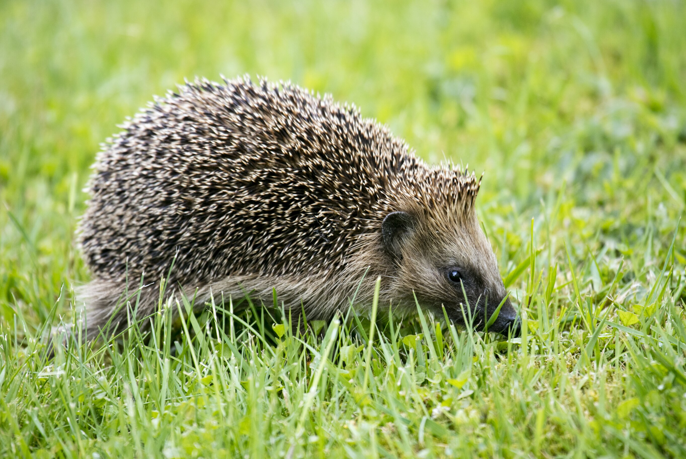
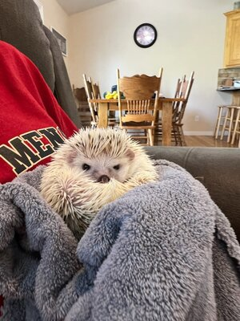

Welcome to Quill Club!
Your Ultimate Resource and Community for Hedgehog Lovers
Welcome
We're so excited to have you here! Whether you're a new hedgehog parent, a long-time enthusiast, or just curious about these adorable, spiky companions, Quill Club Hedgehog is the perfect place to explore, learn, and connect. Welcome to the club—let's make every quill count!"
Hedgehogs
Hedgehogs are naturally nocturnal and prefer to sleep during the day. African Pygmy Hedgehogs need to stay in the temperature range of 70 to 85 degrees. If they get to cold they could go into hibernation and die. Hedgehogs can run up to 10 miles or more a night! Having wheels in their enclosure is important for them to stay active! Hedgehogs are also prone to get diabetes because they love to eat! Their wheels and portion control help prevent this. Most heggies love to cuddle and snuggle up to you! They like hoodie pockets, necks, and inside your shirts! Overall, hedgehogs are a low maintenance fun loving pet!
What is the QuillClub?
Quill club is an online club for hedgehog lovers everywhere to show off their heggies, ask questions, and simply socialize! Here you can learn how to prepare for and take care of these sassy spiky potatoes! Every hedgehog is unique in their personality and tastes. Bonding with your hedgehog takes time but is worth it!
